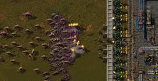
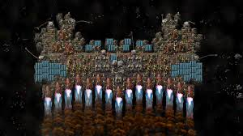
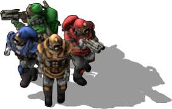

Factorio is a real-time strategy game focused on resource management, automation, and factory building.
In the game, players take on the role of an engineer stranded on an alien planet, tasked with constructing intricate production lines to produce
increasingly complex products while defending against hostile creatures.
Key Points
- Build automated factories to produce goods.
- Manage resources like ores, coal, and oil.
- Optimize production lines for efficiency.
- Defend against hostile alien creatures.
- Research technologies to unlock advanced capabilities.
Who Made it?
Developed by Wube Software, the game was initially released in early access in 2016, following years of development and community feedback.
Its official 1.0 release occurred in August 2020, and it has since gained a dedicated
fan base due to its depth and complexity, further releasing 2.0 in 2024.
Who is it Made for?
Factorio is designed for players who enjoy complex problem-solving, strategic planning, and optimization, particularly those with an interest in engineering and automation.
Its depth and intricate gameplay make it most appealing to players who appreciate meticulous design, resource management, and the challenge of refining systems over time.
More Information
For more information, please check out their website and wiki!
For tips, tricks, and general guides, check out FactorioCheatSheet